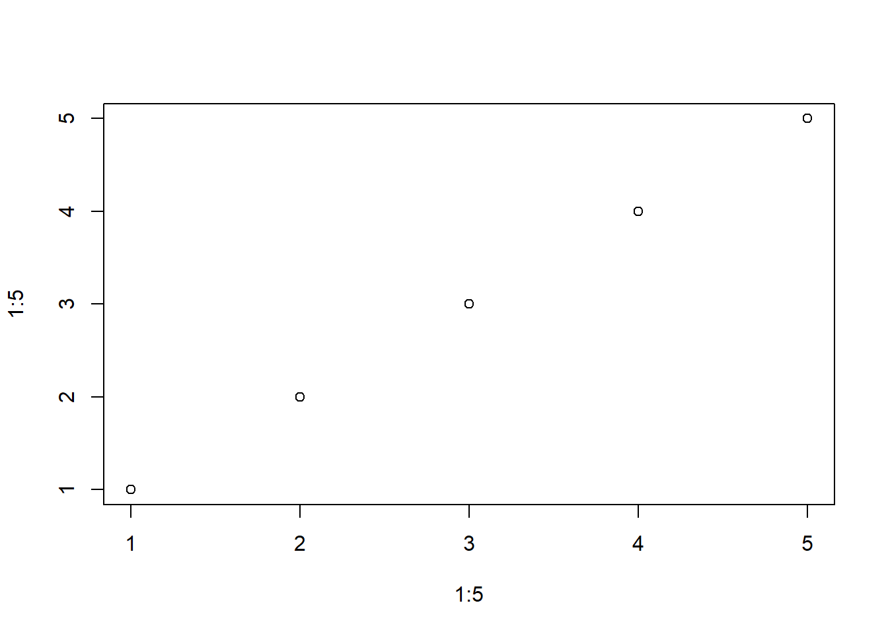
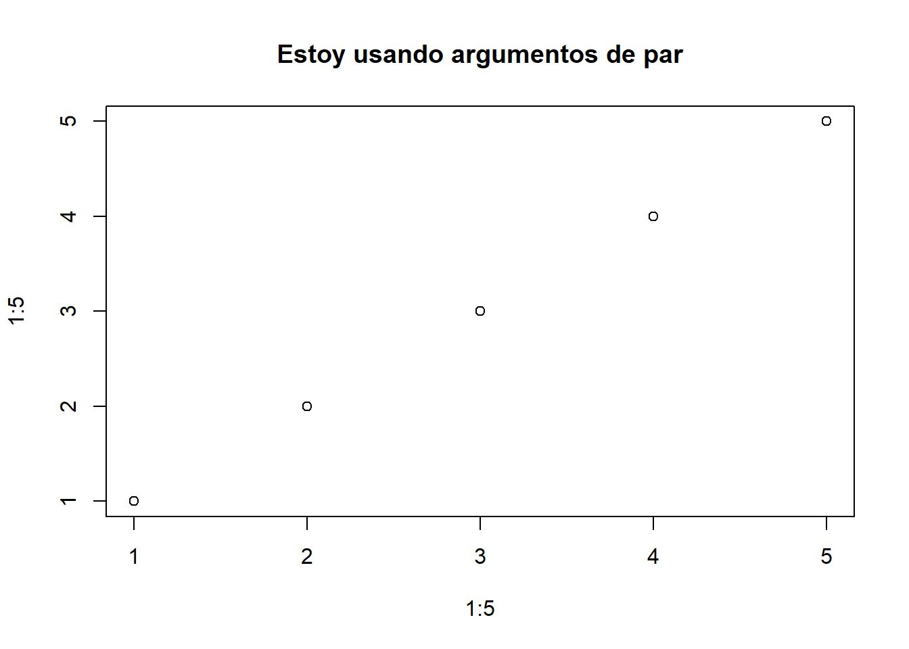

La creciente disponibilidad de datos y de versatilidad de los programas de análisis han provocado el incremento en la cantidad y complejidad de los análisis que realizamos en ecología. Esto hace cada vez más necesaria la eficiencia en el proceso de gestión y análisis de datos. Una de las posibles formas para optimizar estos procesos y acortar los tiempos de trabajo para los usuarios de R es la programación basada en funciones. Las funciones permiten automatizar tareas comunes (por ejemplo, leer diferentes bases de datos) simplificando el código.
Las funciones son objetos de R que toman un input y consiguen un output haciendo una acción concreta (funcionalidad específica). Son los bloques de construcción fundamentales en cualquier script de R que es un lenguaje funcional.
To understand computations in R, two slogans are helpful:
Se puede llamar a una función a través de otra función e iterar el proceso lo que hace que R sea una herramienta muy potente. Las iteraciones sirven para realizar la misma acción a múltiples entradas. Existen dos grandes paradigmas de iteración: la programación imperativa y la programación funcional. En este taller, nos centraremos principalmente en la programación funcional y aprenderemos a utilizar el paquete {purrr}, que proporciona funciones para eliminar muchos bucles comunes.
Las principales ventajas de la programación funcional (uso de funciones e iteraciones) son:
Facilidad para ver la intención del código y, por tanto, mejorar la comprensión para uno mismo, colaboradores y revisores:
Las funciones tienen un nombre evocativo.
El código queda más ordenado.
Rapidez si se necesitan hacer cambios ya que las funciones son piezas independientes que resuelven un problema concreto.
Disminuye la probabilidad de error.
💡Los bucles pueden ser más explícitos en cuanto a que se ve claramente la iteración, pero se necesita más tiempo para entender que se está haciendo.
¿Cuándo hay que usar una función?
Se recomienda seguir el principio “do not repeat yourself” (DRY principle): cada unidad de conocimiento o información debe tener un representación única, inequívoca y autoritativa en un sistema.
Escribir una función ya merece la pena cuando has copiado y pegado más de dos veces lo mismo. Cuantas más veces esté repetido un código en más sitios necesitarás actualizarlo si hay algun cambio.
Teoría sobre funciones en R
Las funciones tienen tres componentes:
body() (cuerpo): código dentro de la función.
formals(): lista de argumentos que controla como se puede ejecutar la función.
environment(): la estructura que alimenta el scoping de la función, es decir, el entorno donde se ubica la función.
El lexical scoping (ámbito léxico) son el conjunto de normas sobre cómo los valores de las variables son extraidos del entorno en cada lenguaje de programación, es decir, como se asocia una variable a un valor. En R tiene cuatro normas básicas, pero la más importante para empezar con programación funcional es que si un argumento no está definido en una función, R buscará ese nombre en el nivel del entorno inmediatamente superior (name masking).
f <-function(x) {x + y}y <-100f(10)
[1] 110
y <-1000f(10)
[1] 1010
Hay una excepción a esta norma que son las funciones primitivas. Están escritas en C en lugar de R y sólo aparecen en el paquete base. Son más eficientes pero se comportan diferente a otras funciones, así que R Core Team intenta no crear nuevas funciones primitivas. El resto de funciones siguen la estructura indicada arriba. Dentro de estas.
Según el tipo de output generado hay dos tipos de funciones: - Las funciones de transformación transforman el objeto que entra en la función (primer argumento) y devuelven otro objeto o el anterior modificado. Los funcionales son tipos especiales de funciones de transformación. - Las funciones secundarias (side-effect functions) tienen efectos colaterales y ejecutan una acción, como guardar un archivo o dibujar un plot. Algunos ejemplos que se usan comunmente son: library(), setwd(), plot(), write.csv()… Estas funciones retornan de forma invisible el primer argumento, que no se guarda, pero puede ser usado en un pipeline.
sum
function (..., na.rm = FALSE) .Primitive("sum")
body(sum)
NULL
Sintácticamente, las funciones en general tienen tres componentes:
Función function() (primitiva)
Argumentos: lista de inputs.
Cuerpo: trozo de código que sigue a function(…), tradicionalmente entre llaves.
nombre1_v1 <-function(x, y) {paste(x, y, sep ="_")}nombre1_v2 <-function(x, y) paste(x, y, sep ="_")nombre1_v3 <- \(x, y) paste(x, y, sep ="_")nombre1_v1("Vero", "Cruz")
[1] "Vero_Cruz"
nombre1_v2("Vero", "Cruz")
[1] "Vero_Cruz"
nombre1_v3("Vero", "Cruz")
[1] "Vero_Cruz"
📝 Si la función tiene mas de dos lineas es mejor usar llaves siempre para que quede bien delimitada. La llave de apertura nunca debe ir sóla (excepto con else) pero si la de cierre. Y por favor… ¡usad sangrias! (Code > Reindent lines/Reformat code)
💡Los operadores infijos (+), de flujo (for, if), de subdivisión ([ ], $) o llaves ({ }) o de reemplazo (<-) también son funciones. La tilde invertida ``` permite referirse a funciones o variables que de otro modo tienen “nombre ilegales”.
3+2
[1] 5
`+`(3, 2)
[1] 5
for (i in1:2) print(i)
[1] 1
[1] 2
`for`(i, 1:2, print(i))
[1] 1
[1] 2
R tiene dos tipos de funciones con una sintaxis especial, donde los argumentos no van después de llamar a la función. Los operadores infijos, en los que el nombre de la función se coloca en medio de los argumentos, y las funciones de reemplazo.
En general las funciones tienen un nombre que se ejecuta cuando se necesita como hemos visto hasta ahora, pero esto no es obligatorio. Algunos paquetes como {purrr} o las funciones de la familia apply permiten el uso de funciones anónimas para iterar.
models <- penguins %>%split(.$species) %>%map( ~lm(body_mass_g ~ bill_length_mm, data = .)) #Método abreviado donde solo se utiliza un lado de la fórmula de la función
Cómo escribir funciones
Imaginad que para un set de datos quisieramos hacer un gráfico de distribución de cada variable, en función de una categórica que nos interese especialmente, para ver como se distribuye.
#Nos interesan las diferencias entre especie y sexoggplot(penguins, aes(x = species, y = bill_length_mm, color = sex)) +geom_point(position =position_jitterdodge(), alpha =0.3) +geom_boxplot(alpha =0.5) +scale_color_manual(values =c("turquoise", "goldenrod1")) +theme_light()
ggplot(penguins, aes(x = species, y = island, color = sex)) +geom_jitter() +scale_color_manual(values =c("turquoise", "goldenrod1")) +theme_light()
#Etc
Hemos copiado un código más de dos veces para realizar una misma acción (es decir, un gráfico para ver como se distribuye una variable) así que hay que considerar la posibilidad de que estamos necesitando una función. A continuación vamos a seguir unos sencillos pasos para transformar cualquier código repetido en función.
Analizar el código: ¿cuáles son las partes replicadas? ¿cuantos inputs tenemos? ¿cuáles varían y cuáles no?
ggplot(penguins, aes(x = species, y = var_cat, color = sex)) +geom_jitter() + miformato
var <-"island"miformato <-list(scale_color_manual(values =c("turquoise", "goldenrod1")),theme_light())p <-ggplot(penguins, aes(x = species, y =pull(penguins, var), color = sex)) + miformatoif (is.numeric(pull(penguins, var))) { p +geom_point(position =position_jitterdodge(), alpha =0.3) +geom_boxplot(alpha =0.5) } else { p +geom_jitter()}
📝 Crear objetos con cálculos intermedios (en el ejemplo, el caso del objeto “p”), es una buena práctica porque deja más claro lo que el código está haciendo.
Elegir un nombre para la función (📝). Idealmente tiene que ser corto y evocar lo que la función hace. En general, debe ser un verbo (p.e. imputar_valores) mientras que los argumentos son nombres (p.e. data, variable, etc.). Usar un nombre para una función está permitido si la función calcula algo muy conocido (p.e. mean()) o si sirve para acceder a partes de un objeto (p.e. residuals()). También se recomienda evitar verbos muy genéricos (p.e. calcular) y si el nombre tiene varias palabras separarlas con guión bajo o mayúsculas, pero ser consistente. Si programas varias funciones que hacen cosas parecidas se recomienda usar el mismo prefijo para todas (p.e. “str_” en el paquete {stringr}).
#Ejemplos de nombres que no hacerT <-FALSEc <-10mean <-function(x) sum(x)rm(T, c, mean)
Enumerar los argumentos dentro de function y poner el código simplificado dentro de las llaves.
#Varias opcionesexpplot <-function (var) { miformato <-list(scale_color_manual(values =c("turquoise", "goldenrod1")),theme_light()) p <-ggplot(penguins, aes(x = species, y =pull(penguins, var), color = sex)) +ylab(var) + miformatoif (is.numeric(pull(penguins, var))) { p +geom_point(position =position_jitterdodge(), alpha =0.3) +geom_boxplot(alpha =0.5) } else { p +geom_jitter() }}
📝 Utiliza comentarios (#) para explicar el razonamiento detrás de tus funciones. Se debe evitar explicar qué se está haciendo o cómo, ya que el propio código ya lo comunica. También se recomienda usar # para separar apartados (Cmd/Ctrl + Shift + R).
💡Puedes querer convertir estas pruebas en test formales. En funciones complejas sirven para que, aunque hagas cambios, se pueda comprobar que la funcionalidad no se ha roto. Si estás interesado puede leer sobre tests aqui: https://r-pkgs.org/testing-basics.html
Ejercicio 1
Genera una función para escalar (es decir, restar la media y dividir por la desviación típica) las variables numéricas de penguins.
Argumentos
En general hay dos grupos: los que especifican los datos y los que especifican detalles de la ejecución de la función. Normalmente los que especifican datos van primero y los de detalle después y suelen tener valores por defecto (los más comunes), para cuando no se especifique nada.
📝 Los nombres de los argumentos deben ser cortos y descriptivos. Hay algunos comunes pero poco descriptivos que también se suelen usar (p.e. x, w, df, n, p, etc.), además de otros que ya existen y que no conviene definir de nuevo (p.e. na.rm).
Los argumentos se pueden especificar utilizando el nombre completo, una abreviatura unequívoca o el órden de posición (unnamed arguments), siendo este el órden de prioridad a la hora de corresponder los argumentos con lo que se escribe.
📝 Generalmente sólo se usa el orden de posición para para los primeros uno o dos argumentos, los más comunes que todo el mundo conoce. Si se cambia un argumento de detalle con valor por defecto conviene poner siempre el combre completo.
📝 Usar espacios antes y después de “=” y después de “,” hace mucho más fácil identificar los componentes de la función.
average <-mean(rnorm(10, mean =50, sd =25) /12, trim =0.2)average<-mean(rnorm(10,mean=50,sd=25)/12,trim=0.2)
Hay un argumento especial llamado “…”, que captura cualquier otro argumento que no se corresponde con los nombrados en la función. Se utiliza para transmitir argumentos a otras funciones incluidas en nuestra función.
?plot
starting httpd help server ... done
plot(1:5, 1:5)

plot(1:5, 1:5, main ="Estoy usando argumentos de par")

📝 Usar “…” hace que las funciones sean muy flexibles, pero hace necesario leer cuidadosamente la documentación para poder usarlo. Además, si se escribe mal un argumento no sale error.
sum(1, 2, 5, na.mr =TRUE)
[1] 9
sum(1, 2, NA, na.mr =TRUE)
[1] NA
Valores de retorno
La última expresión ejecutada en una función es el valor de retorno. Es el resultado de ejecutar la función, a no ser que se especifique invisible(). Las funciones arrojan un sólo objeto. Si se quieren obtener más, tendrá que ser en formato de lista.
📝 La función return() se usa para indicar explicitamente qué se quiere obtener en una función. Se recomienda su uso cuando el retorno no se espera al final de la función. P.e. en las ramas de una estructura if/else sobre todo hay alguna rama larga y compleja.
Ejercicio 2
¿Cómo generalizarías la función expplot para que te sirviera para cualquier base de datos y cualquier variable categórica?